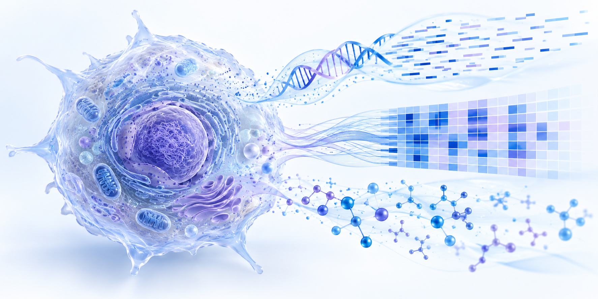

Decoding cell biology
through genomes,
Multi-Omics and data.
I investigate CHO cell biology by integrating Multi-Omics, next-generation sequencing and computational analysis to support biopharmaceutical innovation.
From samples at the bench
to insight in the data.
I am a biologist working at the intersection of molecular science and computation. My work spans CHO cell Multi-Omics analysis, viral whole-genome sequencing, microbial taxonomy, comparative genomics and microbiome analysis.
- Current
- Senior Scientist
Samsung Biologics - Previously
- Postdoctoral Research Associate
IBS Korea Virus Research Institute - Education
- Ph.D., Public Health Sciences
Korea University
Where experiments
meet computation.
Integrated Multi-Omics Analysis of CHO Cells
Integrating whole-genome sequencing, transcriptomics and metabolomics to understand CHO cell characteristics and biopharmaceutical productivity.

Viral whole-genome sequencing & surveillance
Fast, robust sequencing protocols and genomic analysis for emerging and re-emerging viruses.
→ 03MicrobiologyMicrobial genomics & taxonomy
Discovering and classifying bacteria through phenotype, phylogeny and comparative genomes.
→ 04MicrobiomeMicrobiome systems analysis
16S and shotgun metagenomics to understand communities, function and host interaction.
→ 05BioinformaticsReproducible NGS pipelines
Practical workflows for assembly, phylogenetics, comparative genomics and data mining.
→Research in focus.
Contact
Let’s turn biological
questions into evidence.
Open to scientific conversations and collaborations in genomics, microbiology and bioinformatics.
Get in touch →